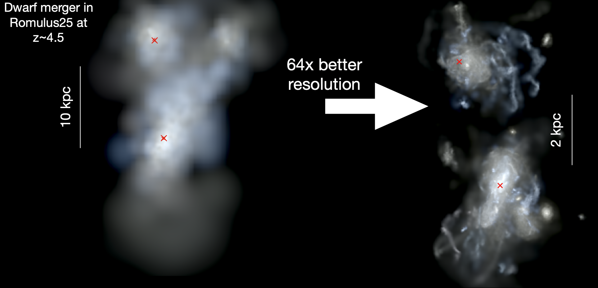

Overview
SMBHs form in the centers of young galaxies in the early Universe. These young galaxies are the "building blocks" of more massive galaxies and, as these smaller galaxies merge to form larger and larger galaxies, their SMBHs are thought to form binary systems and eventually merge, emitting gravitational waves that we will be able to detect with future space-based observatories like LISA. Understanding where and when these mergers are likely to take place will be critical to understanding and interpretting gravitational wave data, which, given the proper theoretical context, will provide a unique view into SMBH evolution through cosmic time. To accomplish this we need a better understanding of how SMBHs move within their host galaxies. With cosmological simualtions that utilize a new Dynamical Friction model, we can study SMBH orbital evolution within galaxies in a way that has never before been possible.
Research Goals
- Study the dynamical evolution of massive black hole pairs in merging galaxies
- Better understand the timescale to form a massive binary black hole and how this would affect predictions for gravitational wave detectors
- Predict the multiwavelength signatures associated with the formation of a massive black hole binary, including when black hole pairs may shine as dual AGN Dual Active Galactic Nuclei are systems observed to have multiple black holes that are growing fast enough to emit light and be observed as AGN.
- Predict and characterize the population of off-center SMBHs in the Universe
Formation of Close SMBH Pairs
It is commonly thought that when two galaxies merge, their respective SMBHs will also merge relatively quickly. Using the Romulus25 cosmological simulation, we can examine how often and after how long SMBHs form close pairs (the precursors to SMBH binaries and mergers) after their galaxies merge. We find that the formation of close pairs (and therefore also SMBH mergers) is actually rather uncommon and often takes billions of years following galaxy mergers. This delay depends on the properties of the host galaxy and can significantly affect predictions for LISA detection rates. In massive galaxies, minor mergers are common and, we predict, should result in many wandering SMBHs, including within galaxies of similar mass to our own Milky Way.
High Resolution Zoom-in Simulations of Galaxy Mergers
LISA will be most powerful in its ability to detect mergers between relatively low mass black holes (as small as a few thousand solar masses) within low mass galaxies out to incredibly early times. This is important because it means LISA will potentially probe the very early population of recently formed massive black holes. While Romulus has been great at building a statistical idea of black hole mergers over cosmic time, such large simulations remain significantly limited in resolution. We select dwarf galaxy mergers from Romulus at z > 2 that result in SMBH mergers in that simulation, then re-simulate those galaxies at much higher resolution. Such zoom-in simulations will provide a great deal more detail in tracking the devolution of the black hole pairs, as well as determining the environment that black hole binaries detected with LISA are likely to reside within.


{kind=link}
{kind=link}